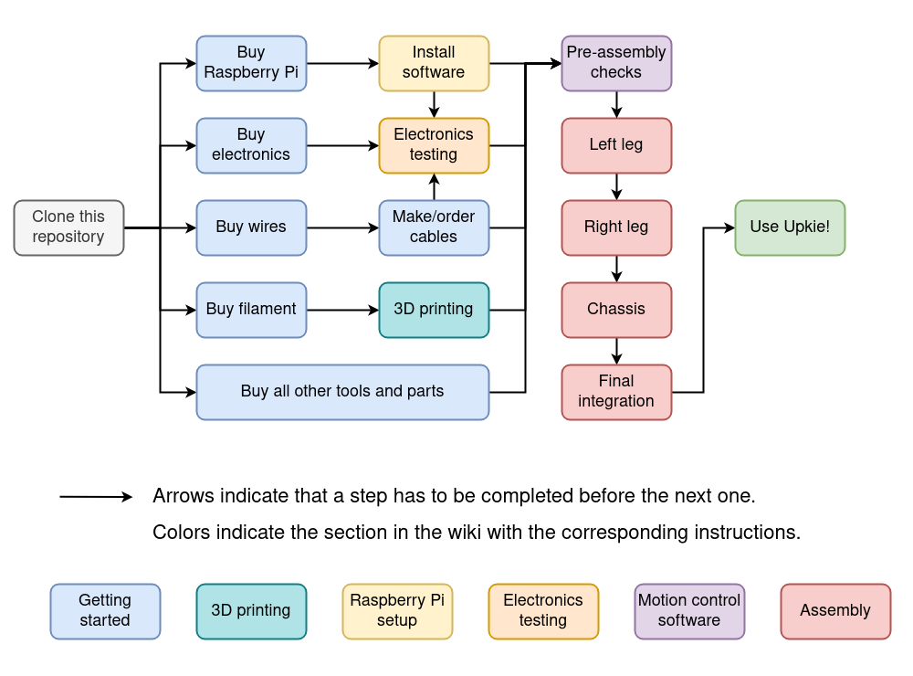

- Generated by
 1.8.20
1.8.20
|
upkie
12.0.0
Open-source wheeled biped robots
|
This part of the documentation hosts instructions to build your own Upkie wheeled biped. The complete process looks like this:

Here are step-by-step instructions:
In the process you will likely end up checking the following assembly-related pages:
Additionally, there are a number of custom mods you can check out in the Tips And Tricks section of the discussion forum.